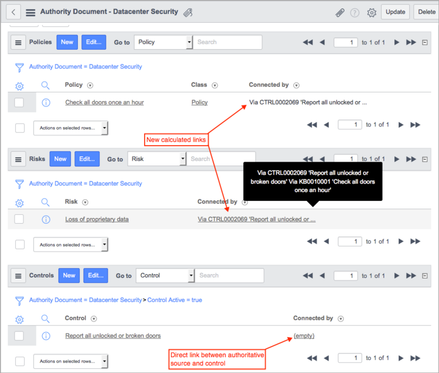

GRC Calculated Links
Contents
1 Overview
The links between authority documents, policies, controls, and risks can take a number of different paths, depending on your organization's requirements. ServiceNow GRC supports any hierarchy you create by establishing many-to-many relationships between all the tables involved and using these relationships to create calculated links between elements. Calculated links are indirect links between elements that aid in reporting on authority documents by rolling up results from control tests. Calculated links are created automatically as you add direct links between elements and managed dynamically as you edit existing links in your hierarchy.
{kind=link}
2 How Calculated Links Work
An organization can use ServiceNow calculated links to view connections between GRC records in a hierarchy that are not directly connected. GRC provides a table structure that maintains all possible combinations of links and then links everything together in the hierarchy you create.
GRC uses these rules when calculating links:
- Links are calculated between authority documents, and policies, risks, and controls. These links are shown in forms, together with the method of connection, in addition to other related lists.
- Links are calculated between controls, policies, and risks when rolling up control test results for authority documents, policies, and risks.
- Authority documents and citations are at the top of the hierarchy. Control test definitions and control test instances provide data about the number of passing and failing control tests at all levels. Controls, policies, and risks are equal components. Links can go in any direction between these elements.
- An authority document and its citations are treated as a single entity. A direct link to an authority document is the same as a direct link to the related citations. Components linked directly to citations are linked to the authority document with the calculated - direct link, created specifically for this purpose. Calculated links are only created to the authority document and not to the citations.
- The system only creates links between components configured as pertinent. For example, if an authority document, a risk, and a policy are all linked together, and the risk is configured as not pertinent, the system cannot link the policy to the authority document when rolling up data for reporting.
- Users cannot manually delete calculated links.
{kind=link}
2.1 Tables for Linking
These tables store all the possible links defined in the system between GRC components. The Calculated and Connected by columns contain information about the indirect links between records that GRC creates for your hierarchy. The Pertinent column in each table determines if the components are available for linking. When you mark a component in a hierarchy as not pertinent, the system considers the direct links on either side of that component as not pertinent and does not establish an indirect link through that node.
| Table | Description |
|---|---|
| Control Authoritative Source [m2m_control_authoritative_source] | Stores the reference link between a control and an authority document. |
| Control Authoritative Source Content [m2m_control_auth_src_content] | Stores the reference link between a control and a citation. |
| Policy Control [m2m_control_policy] | Stores the reference link between a control and a policy. |
| Policy Authoritative Source Content [m2m_policy_auth_scr_content] | Stores the reference link between a policy and a citation. |
| Risk Control [m2m_risk_control] | Stores the reference link between a risk and a control. |
| Risk Policy [m2m_risk_policy] | Stores the reference link between a risk and a policy. |
| Policy Authoritative Source [m2m_policy_authoritative_source] | Stores the reference link between a policy and an authority document. |
| Risk Authoritative Source [m2m_risk_authoritative_source] | Stores the reference link between a risk and an authority document. |
3 Example
GRC establishes both direct and indirect links between GRC records that enable it to function with any hierarchy, regardless of the order in which the elements appear. In this example hierarchy, an authority document manages building security regulations using a policy that defines the potential risk and a control to ensure that the policy is being followed. The goal is to report on authority documents by rolling up the results of failed and passed control tests through policies and risks. Procedures have been put into place to prevent loss of company property and data from unauthorized entry into company buildings. Security personnel are directed to check the doors once an hour and report any issues they find. For the purposes of this example, the authority document (a) is the first element created, and the control (e) is the last element. When the link (f) is created between the citations and the control, the system generates the calculated links needed to roll up data properly through the hierarchy. These links function the same with controls, risks, and policies in other configurations.
{kind=link}
3.1 Creating the Elements
The best method for linking together the elements of a GRC hierarchy is to create each element from within the record of another element. In this example, the first task is to create the authority document and its citations, and then create a policy linked to a risk and a control. Finally, the citations and the control are linked, which generates the calculated links between the authority document and the other elements in the hierarchy. Remember that all elements must be configured as pertinent for the system to complete the linking process.
3.1.1 Creating an Authority Document
Create an authority document (a) for building security and the citation (b) to manage entry control.
- Navigate to GRC > Authority Documents > Authority Documents.
- Click New.
- Complete these fields:
- Name: Building Security
- Type: Framework
- Pertinent: Selected
- Right-click in the header bar and select Save from the context menu.
- In the Citations related list, click New.
- Complete these fields:
- Reference: Any reference identifier, such as S-01
- Name: Entry control
- Type: Control
- Pertinent: Selected
- Click Submit.
{kind=link}
{kind=link}
3.1.2 Creating a Policy
Create a policy (c), then link it to a risk (d) and a control (e).
{kind=link}
- Navigate to GRC > Policies.
- Click New.
- Type a short description that identifies this policy, such as Check all doors once an hour.
- Make sure the Pertinent check box is selected.
- Save the record.
- In the Risks related list, click New.
- Complete these fields:
- Risk name: Loss of proprietary data
- Pertinent: Selected
- Click Submit.
- The Policy form appears.
- In the Controls related list, click New.
- Complete these fields:
- Name: Report all unlocked or broken doors
- State: Active
- Pertinent: Selected
- Click Submit.
{kind=link}
{kind=link}
{kind=link}
3.2 Generating Calculated Links
To generate the calculated links from the authority document to the other elements in the hierarchy, create the link (f) from the citation (b) to the control (e).
{kind=link}
- Navigate to GRC > Authority Documents > Authority Documents.
- Open the Building Security record.
- In the Citations related list, select the S-01 record.
- In the Citation record, click Edit in the Controls related list.
- Select the control called Report all unlocked or broken doors that was linked to the policy in the previous section.
- Click Save
- To view the link information look at the Connected by column, which shows the path between elements connected by calculated links.
- Navigate to GRC > Authority Documents > Authority Documents and open the record for Building Security.
- In the related list for Controls, Policies, or Risks, point at the value in the Connected by column.
- To view the link record, click the value in the Connected by column.
- The record displays the elements that are linked, the calculated link type, and the connection path. In this example, the authority document is linked to the control by a special link called a calculated direct link, expressed here as Linked via content. This type of link is created only when an authority document is linked to another element through the citation.
- The connection paths are as follows:
{kind=link}
{kind=link}
{kind=link}
{kind=link}
Elements Linked Calculated Link Connection Path AS - C Linked via content Via the citation AS - P Indirect Link Via the citation and the control AS - R Indirect Link Via the citation, the control, and the policy R - C Indirect Link Via the policy
3.3 Redirecting the Hierarchy
In this procedure, delete the direct link to the control from the citation and link the control directly to a new authority document. GRC redraws all the indirect links correctly within the new hierarchy.

- Navigate to GRC > Authority Documents > Authority Documents.
- Open the Building Security record.
- In the Citations related list, select the S-01 record.
- In the citation record, select the Controls related list.
- Delete the Report all unlocked or broken doors control from the list, using the command in the Actions choice list.
- Navigate to GRC > Authority Documents > Authority Documents and click New.
- Create a new record called Datacenter Security.
- Make sure the record is Pertinent.
- Right-click in the header bar and select Save from the context menu.
- In the Controls related list, click Edit.
- Select the Report all unlocked or broken doors control and click Save.
- The system creates calculated links from the new authority document to the appropriate elements and displays the links in the related lists. The link between the authority document and the control is now a direct link and does not need to be calculated. Point at a value in the Connected by column to display the complete path in a pop-up window.
- 
- To see the link between the risk and the control, navigate to GRC > Risks and select the Loss of proprietary data record.
{kind=link}
{kind=link}
{kind=link}
Elements Linked Calculated Link Connection Path AS - P Indirect Link Via the control AS - R Indirect Link Via the policy and the control R - C Indirect Link Via the policy